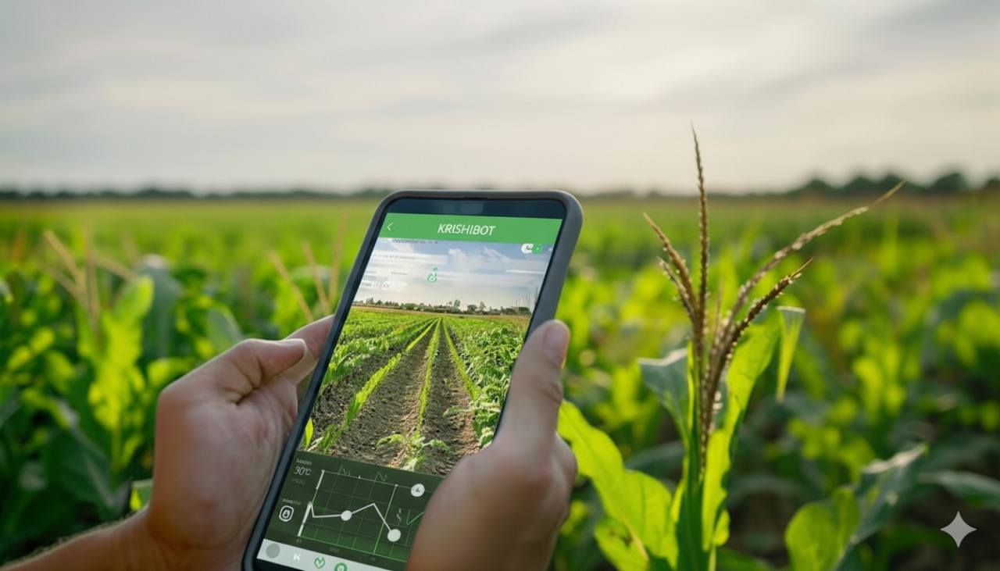

Get ready to meet your powerful AI farming partner.
Your AI-powered agricultural companion for smart farming and maximum yields.
Your AI-powered agricultural companion for smart farming and maximum yields.
KRISHIBOT puts expert agricultural knowledge right in your pocket. Diagnose crop diseases, get real-time weather alerts, and receive optimized planting schedules tailored to your land.

KRISHIBOT provides farmers with smart farming solutions, from crop health analysis to resource management.
Our bot supports multiple languages, allowing it to communicate with farmers in their preferred dialect for a truly inclusive experience.
Our bot features an intuitive design that makes it exceptionally easy to use, ensuring a smooth experience for all users.
KRISHIBOT was founded on a simple, yet powerful belief: that technology should serve everyone, especially the backbone of our economy—our farmers. We recognized the challenges faced by local farmers, from unpredictable weather and pest outbreaks to lack of immediate, expert advice.
Our solution is an advanced, multilingual AI companion that democratizes agricultural expertise. By harnessing the power of artificial intelligence, machine learning, and vast crop data, KRISHIBOT provides instant, accurate, and localized recommendations right to the farmer's phone.
Our Vision:To foster a world where every farmer, regardless of the size of their land or their literacy level, has the tools to achieve maximum yield, sustainable practices, and prosperity. Join us as we cultivate the future of agriculture, one smart decision at a time.